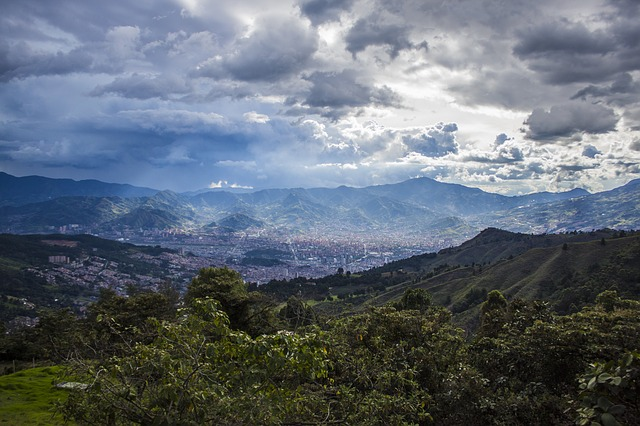

-

Puerto Viejo, Costa Rica
▼
►
Really awesome little Rasta town on the Atlantic side of Costa Rica. We spent most of our time surfing, eating ceviche, and drinking rum. If you ever go, make sure to check out Rockin J's Hostel and the Pancake Shop!
-

This was a toss up between Leon and Granada. They're both bustling colonial towns with a ton of cool architechture and fun night life, Leon wins because of the volcano boarding and free mojitos at Bigfoot.
-

Spent a month living with a family and going to a Spanish language school. Antigua is another old colonial town and a lot of Guatemaltecos come to party for the weekend. Definitley had some pretty crazy nights out on the town.
-

I remember going to Patmos and Samos for sure, I think we went to a few others as well. The food, bright blue water, and culture are what really made this destination stand out. Seriously tho, the food was soooo good!
-

I visited Rome with a church group right after high school. Seeing the colliseum was really cool but getting to go into the catacombs in the vatican was truly an amazing experience. We actually so Peter's bones.
-

Crested Butte, Colorado
▼
►
Came here with a group of college friends and stayed at this mansion up on the side of a mountain. The picture is from the window of the bedroom I stayed in. It's a sleepy little ski town but man, the Rockies are gorgeous!